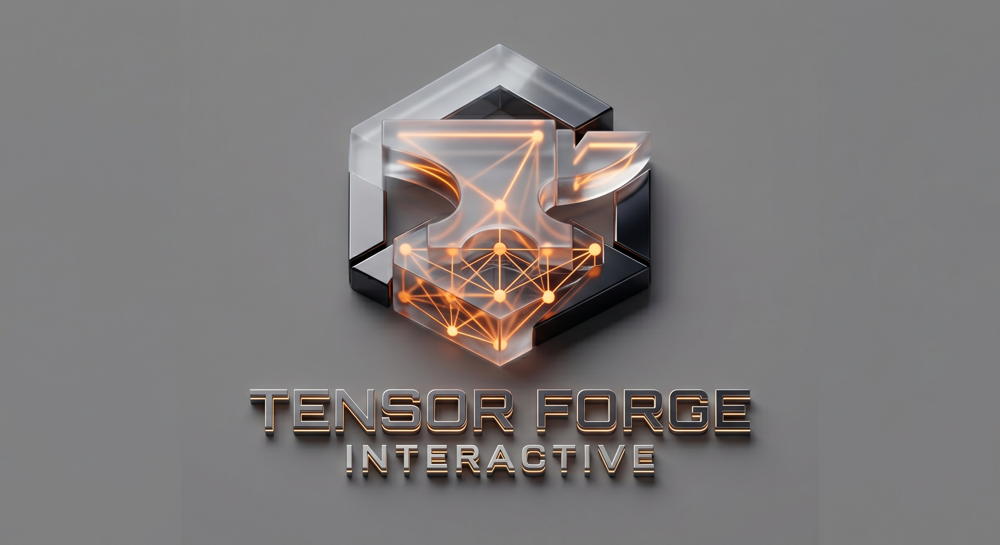

Independent Video Game Production Studio
Tensor Forge Interactive is an independent studio dedicated to the engineering, production, and publishing of high-performance interactive entertainment experiences.
We focus on mobile-first architecture optimized for touch interfaces and Apple Silicon hardware platforms, creating highly immersive titles accelerated by advanced internal asset production workflows.